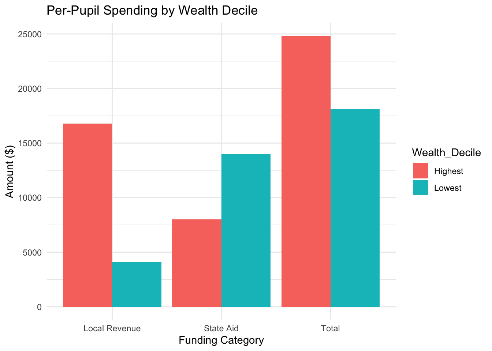
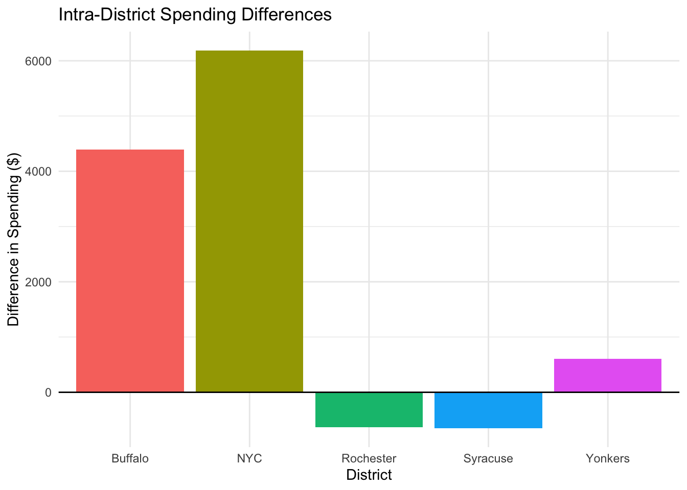
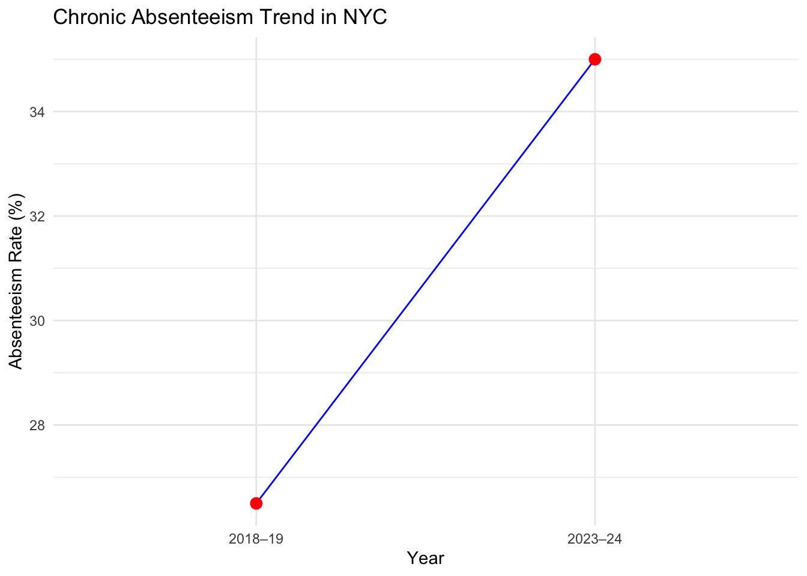

The Relationship Between Education Funding and Student Outcomes in New York State
What is the correlation between funding level and long-term student outlook (e.g college success, employment?
Author
Mehrooz Hassan
Executive Summary
Introduction
New York State spends more per student on K–12 education than any other U.S. state, with average expenditures exceeding $25,000 per pupil annually (CBCNY, 2023). However, this high spending does not translate to uniformly strong outcomes. A deeper analysis reveals systemic issues in how funds are distributed and used. Disparities between districts—especially those defined by wealth—and inconsistencies in performance outcomes signal that spending is not equitably or efficiently targeted (Education Trust–NY, 2022).
This executive summary analyzes the relationship between education funding and student outcomes such as test scores, graduation rates, college enrollment, and long-term employment prospects. Using publicly available datasets, visuals, and policy insights, we highlight the need for equity-focused reforms.
1. Unequal Distribution of School Funding
New York is a national leader in educational spending, but funding is unevenly distributed (CBCNY, 2023). Wealthier districts often benefit from high local tax revenues while high-need schools are left behind (Education Trust–NY, 2022).
NY is one of the top spenders nationally, but funding is unevenly distributed. Poorer districts often receive $2,000–$3,000 less per student than wealthier ones (CBCNY, 2023). Gaps persist due to reliance on local property taxes and outdated funding formulas (NYS Comptroller, 2023).
# Load required librarylibrary(ggplot2)# Create datafunding <-data.frame(Category =rep(c("State Aid", "Local Revenue", "Total"), 2),Amount =c(14000, 4100, 18100, 8000, 16800, 24800),Wealth_Decile =rep(c("Lowest", "Highest"), each =3))# Plotggplot(funding, aes(x = Category, y = Amount, fill = Wealth_Decile)) +geom_bar(stat ="identity", position ="dodge") +labs(title ="Per-Pupil Spending by Wealth Decile",x ="Funding Category",y ="Amount ($)" ) +theme_minimal()

2. Intra-District Funding Disparities
Even when total district-level funding appears adequate, spending disparities exist between high- and low-need schools (Education Trust–NY, 2022).
Resource Gaps in Underserved Schools Underfunded schools lack experienced teachers, AP courses, and updated tech (Education Trust–NY, 2022). College counseling and career services are often limited or nonexistent. These gaps lead to lower test scores, graduation rates, and college readiness.
intra <-data.frame(District =c("NYC", "Buffalo", "Rochester", "Syracuse", "Yonkers"),Spending_Difference =c(6187, 4396, -632, -651, 608))knitr::kable(intra, caption ="Spending Differences Between High-Need and Low-Need Schools")
Spending Differences Between High-Need and Low-Need Schools
District
Spending_Difference
NYC
6187
Buffalo
4396
Rochester
-632
Syracuse
-651
Yonkers
608
Create data
intra <-data.frame(District =c("NYC", "Buffalo", "Rochester", "Syracuse", "Yonkers"),Spending_Difference =c(6187, 4396, -632, -651, 608))# Plotggplot(intra, aes(x = District, y = Spending_Difference, fill = District)) +geom_bar(stat ="identity") +geom_hline(yintercept =0, color ="black") +labs(title ="Intra-District Spending Differences",y ="Difference in Spending ($)" ) +theme_minimal() +theme(legend.position ="none")

Implication: Cities like Rochester and Syracuse allocate less funding to their most vulnerable students. Without district-level accountability, even strong state-level support fails to correct local inequities.
3. Student Academic Outcomes
New York’s graduation rate is relatively high at 87%, but state and national test scores suggest a more complicated picture. Early academic performance lags behind, which can have lasting effects on college and career success (NYS Comptroller, 2023; NAEP, 2022).
Despite high graduation rates, NYS students perform below national averages in early-grade reading and math—foundational skills essential to long-term success.
Implication: Graduation rates can be misleading. Performance data suggests students in underfunded schools are less academically prepared for college or the workforce (NAEP, 2022).
4. College and Career Readiness
Fewer students from underfunded schools enroll in or complete college (The Century Foundation, 2016). Many struggle to access high-wage jobs—even with degrees. Underemployment is more common among students from disadvantaged schools.
Why Equitable Funding Matters:
Numerous studies confirm that more funding leads to higher test scores, college completion, and future earnings. Gains are particularly significant for:
Low-income students (Jackson et al., 2020)
English language learners
Students of color
Implication: Equitable school funding is essential to reduce racial, income, and opportunity gaps in post-secondary success and economic mobility.
5. Chronic Absenteeism
Attendance is a critical early indicator of academic risk. In NYC, chronic absenteeism surged from 26.5% in 2018–19 to 35% in 2023–24 (New York Post, 2025).
# Create dataabsentee <-data.frame(Year =c("2018–19", "2023–24"),Rate =c(26.5, 35.0))# Plotggplot(absentee, aes(x = Year, y = Rate)) +geom_line(group =1, color ="blue") +geom_point(size =3, color ="red") +labs(title ="Chronic Absenteeism Trend in NYC",y ="Absenteeism Rate (%)" ) +theme_minimal()

Implication: Nearly 1 in 3 students misses enough school to significantly impact learning. Underfunded schools often lack the support services needed to re-engage these students (NYS Comptroller, 2023).
6. Structural Policy Challenges
Despite the intention of New York’s Foundation Aid formula to address need-based disparities, it has not been updated in over 15 years (CBCNY, 2023).
Key Issues:
Outdated formula relies on 2000 Census data and a 2004 cost index.
Over-reliance on local property taxes entrenches inequality.
Lack of accountability in how districts allocate and report spending.
Equity Best Practice:
New Jersey allocates 42% more funding to high-need districts and maintains stronger oversight. As a result, it outperforms NYS in standardized test scores and college readiness (Education Law Center, 2023).
Uses a needs-based formula tied to current demographics.
Spends $1.42 on high-need students for every $1 on low-need students.
Reports stronger outcomes on national assessments.
Implication: NYS must overhaul its funding mechanisms to close systemic equity gaps and align spending with modern needs.
Conclusion
New York State’s high education spending presents a unique opportunity to achieve equity and excellence in student outcomes—but only if funding is equitably distributed, transparently tracked, and effectively used. Persistent disparities between and within districts mean that many high-need students continue to face significant barriers to academic success, college readiness, and economic mobility. Addressing these challenges requires not only more funding, but smarter funding—guided by data, accountability, and intentional equity strategies. A modern, student-centered approach to school finance will ensure that every dollar spent translates into measurable improvements in learning and opportunity. - NYS spends more per pupil than any other state, but funding is unevenly distributed.
Poorer districts receive $2,000–$3,000 less per student than wealthier ones.
Underfunded schools lack critical resources—from qualified teachers to college counseling.
Intra-district disparities leave high-need schools with fewer resources than others in the same system.
Chronic absenteeism affects over 35% of students in NYC, limiting the impact of instructional investments.
Tracking and transparency of school-level spending is essential to hold systems accountable.
Reforms must focus on equitable allocation, early intervention, and comprehensive student support.
Increased funding improves outcomes—but only when it is equitably and effectively allocated.
Inequitable funding, absenteeism, and under-resourced schools lead to lower college and career success.
Systemic reforms must prioritize resource allocation, transparency, and student support services.
Recommendations
To improve student outcomes and address long-standing inequities in New York State’s education system, it is not enough to simply increase funding—how the money is spent matters just as much as how much is allocated. When allocating funding to schools, it is essential to ensure that the use of these funds is properly tracked, not just disbursed without follow-up. A thorough analysis should be conducted to determine how funds are distributed within each school—whether to departments, clubs, athletics, or instructional programs. This level of transparency and accountability will not only reveal inefficiencies but will also highlight opportunities for targeted interventions that support equity and student achievement. Effective school funding reform requires modernized formulas, measurable outcomes, and a deep understanding of resource impact at every level.
Key Points:
Modernize the Foundation Aid formula to reflect up-to-date demographic and economic data.
Require detailed tracking of intra-school spending, including departmental, extracurricular, and instructional allocations.
Implement a statewide equity dashboard to monitor per-student funding, absenteeism, graduation rates, and performance outcomes.
Tie funding to accountability metrics, such as improvements in test scores, attendance, and post-secondary success.
Invest early in K–3 reading and math programs to close learning gaps before they widen.
Expand wraparound services—mental health care, housing stability support, and college counseling.
Enforce intra-district equity rules, ensuring that high-need schools receive proportionally more funding and support.